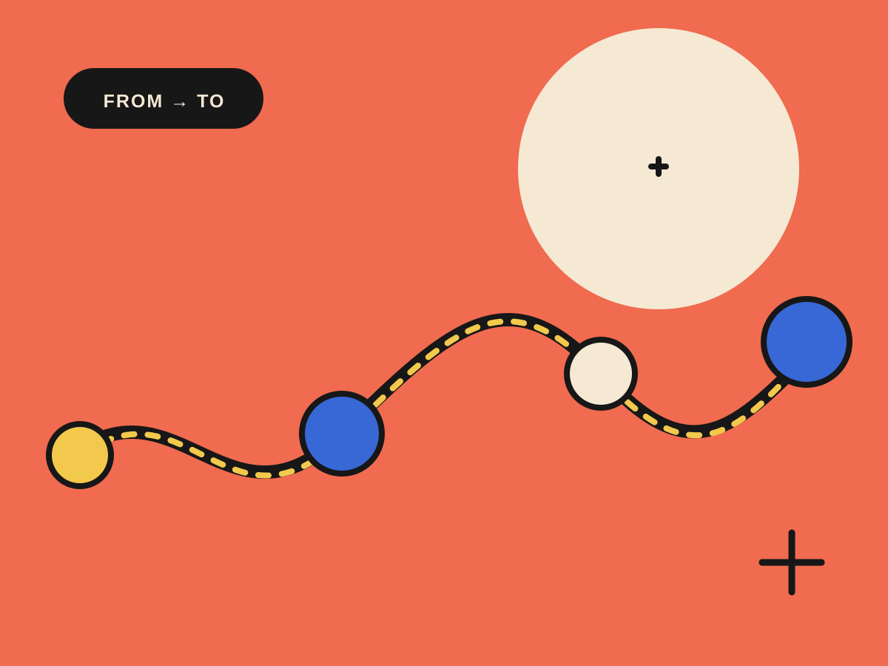

01 Transformation / process automation
Make work
move better.
I help teams turn complex operations into scalable systems through process design, automation, and practical AI enablement.

Systemsthat scale [ 01 — 04 ]
02 My Work
Selected transformation and automation initiatives.


03 About me

I turn complex operations into clearer, more capable ways of working.
I’m Javier Herranz Lazo, a process and transformation leader with more than 10 years of experience across ecommerce and telecommunications. I connect strategy, people, process, data, and technology to build scalable operating models, improve customer journeys, and make change stick.
Today, my focus is AI-enabled transformation: combining process redesign, automation, governance, and change management with tools like n8n, GPT, Claude, Slack, Asana, and Google Workspace. I help teams move from promising use cases to practical systems that improve execution.
Start a conversation ↗04 Start a conversation
✳